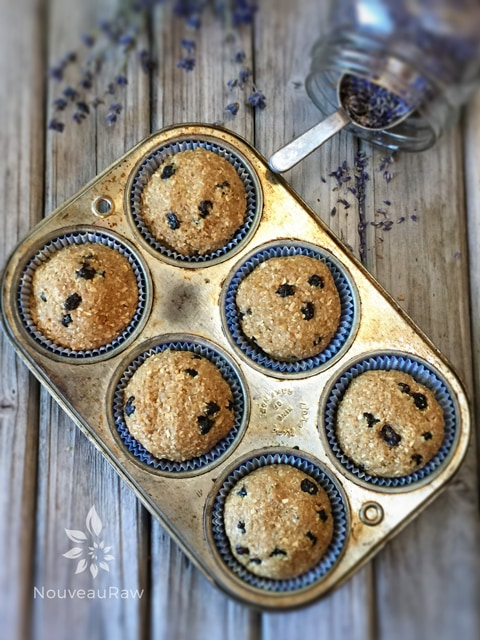
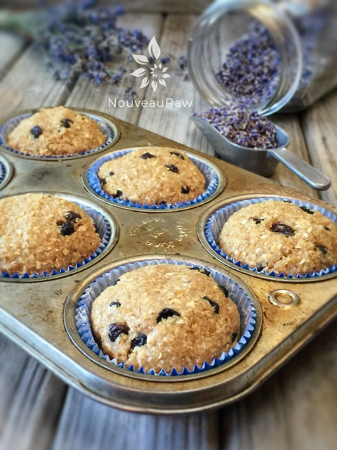
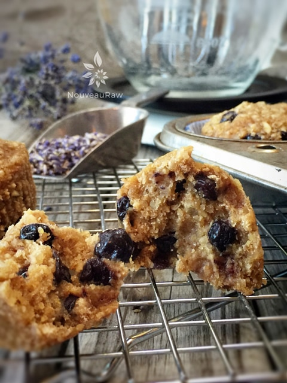

Blueberry Lavender Muffins

- In a food processor, fitted with the “S” blade, combine the oats, macadamia nuts, ground flax, coconut crystals, cinnamon, salt, and lavender. Process for about 10 seconds, mixing all the dry ingredients together.
- Add the maple syrup, and bananas and process again until everything is well mixed.
- Toss in the blueberries and pulse it all together.
- Line each muffin cavity with two liners. I find two are better than one with raw muffins due to the oils from the nuts, etc.
- Measure out 1/3 cup of batter and roll it into a ball in the palm of your hands.
- Drop into the cupcake liner and gently press down into shape. Don’t flatten the top; the dome-shaped top will give it that cooked appearance.
- Place the muffins/liners on the mesh sheet that comes with the dehydrator and dry at 145 degrees (F) for 1 hour, reduce to 115 degrees (F) and continue to dry for 5-6 hours. Long enough for a crust to form on the outside but the inside still remains moist.
- Store leftovers in the fridge in an airtight container for 5-7 days.
Culinary Explanations:
- Why do I start the dehydrator at 145 degrees (F)? Click (here) to learn the reason behind this.
- When working with fresh ingredients, it is important to taste test as you build a recipe. Learn why (here).
- Don’t own a dehydrator? Learn how to use your oven (here). I do however truly believe that it is a worthwhile investment. Click (here) to learn what I use.



© AmieSue.com